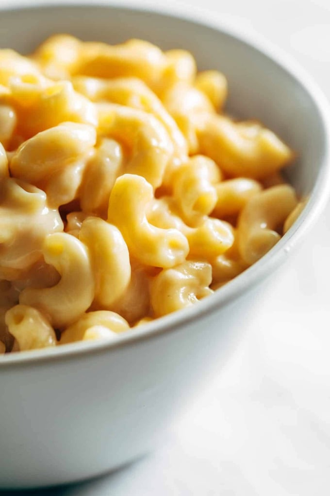

Old School Mac n' Cheese

BAKED MACARONI AND CHEESE RECIPES
This is a completely unpretentious, down-home macaroni and cheese recipe just like my grandma and mom always made. A simple white sauce where you add cheese and a few other flavors with macaroni and a potato chip crust. This recipe makes a lot, I like to make two pans so I can take one to a pot luck and have the other one to keep in the fridge for later.
It's an easy recipe to adjust down if you only want to make one pan. If you aren't cooking it right away, just keep the topping separate until you are ready to put it in the oven.
Ingredients
- 1 ¾ pounds whole-wheat macaroni
- ¾ cup all-purpose flour
- 6 cups milk, divided
- 1 tablespoon Worcestershire sauce
- 1 teaspoon mustard powder
- 1 teaspoon onion powder
- 1 teaspoon cayenne pepper
- salt and ground black pepper to taste
- 1 (8 ounce) package shredded Cheddar cheese, divided
- 3 (8 ounce) packages shredded American cheese
- 1 (8 ounce) bag potato chips (such as Lay's®), crushed
- 1 cup shredded Cheddar cheese
- ⅓ cup grated Parmesan cheese
- butter-flavored cooking spray
- Preheat oven to 375 degrees F (190 degrees C).
- boil large pot of lightly salted water. Cook macaroni in the boiling water,8 minutes.
- Melt butter in a large pot.Slowly add flour to buttercook about 5 minutes.Pour 1 cup milk,whisk for 45 seconds,Add remaining 3 cups milk to the mixture
- Stir Worcestershire sauce, mustard powder, onion powder, and cayenne pepper into the mixture; season with salt and black pepper.
- Cook sauce about 10 minutes.
- Add shredded Cheddar cheese and the American cheese,Stir continually until the cheese melts completely.
- Stir drained macaroni into the cheese sauce to coat.
- Mix crushed potato chips, 1 cup shredded Cheddar cheese, and Parmesan cheese in a bowl. Top the macaroni with the potato chip mixture evenly. Spray the potato chip mixture with cooking spray.
- Bake in preheated oven until the crust is golden brown and the sauce is bubbling, 35 to 45 minutes.
Back to Homepage